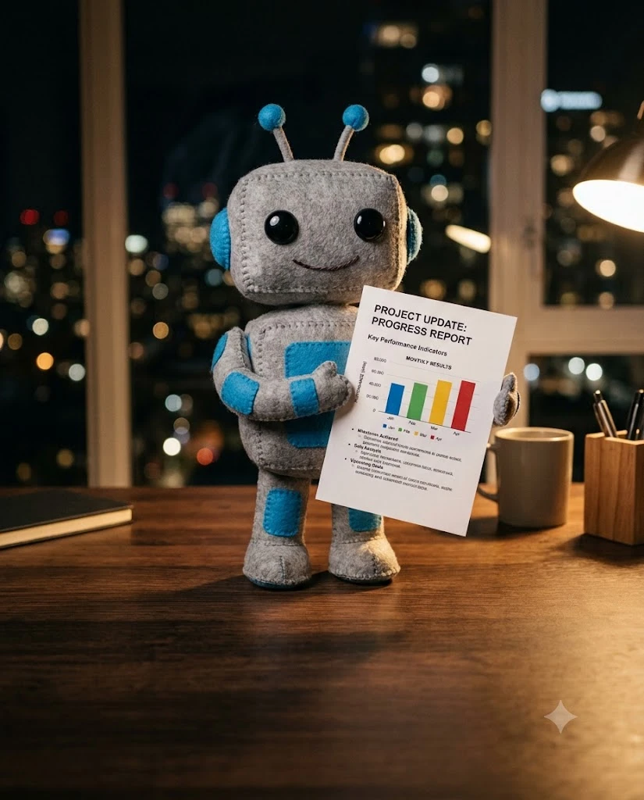

이번 주 메모, 메일, 회의록을 그대로 붙여 넣으세요. 다듬지 않아도 됩니다. [ ] 안만 바꿔 쓰면 됩니다.
아래는 이번 주 내 업무 메모야. 완료한 일 · 진행 중인 일 · 막힌 일 세 칸으로 나눠 표로 정리해 줘. 메모에 없는 내용은 절대 지어내지 마. [이번 주 메모 붙여넣기]
아래 자료에서 보고서에 들어갈 숫자만 뽑아 표로 만들어 줘. 표: 항목 · 숫자 · 지난주 대비 · 출처(어느 줄에서 나왔는지) 출처를 못 찾는 숫자는 '확인 필요'로 표시해. [자료 붙여넣기]
이번 주에 주고받은 메일을 붙일게. 결정된 것 · 나에게 온 요청 · 마감일만 뽑아서 날짜순으로 정리해 줘. [메일 본문 붙여넣기]
이번 주 회의록 [개수]개를 붙일게. 겹치는 논의는 하나로 합치고, 확정된 결정과 담당자만 남겨 줘. [회의록 붙여넣기]
지난주에 세운 계획과 이번 주에 한 일을 비교해 줘. 계획에 있었는데 안 한 일, 계획에 없었는데 한 일을 각각 목록으로. [지난주 계획] [이번 주 한 일]
아래 업무 중 늦어진 일마다 원인 한 줄, 영향 한 줄, 새 마감일을 정리해 줘. 변명처럼 들리지 않게 사실 위주로. [업무 목록]
아래 업무 목록에서 팀장이 '성과'로 볼 만한 것 3가지를 골라 줘. 각각 왜 성과인지 숫자나 결과로 한 줄씩. [업무 목록]
이 보고서를 다른 팀 사람도 읽을 수 있게, 약어와 전문용어를 찾아 괄호로 짧게 풀어 줘. [초안 붙여넣기]
PART 1 결과를 그대로 이어서 붙이면 됩니다. 같은 대화창에서 이어 쓰면 더 정확해요.
위에서 정리한 내용으로 주간보고 초안을 써 줘. 순서: 한 줄 요약 · 이번 주 성과 · 진행 상황 · 이슈 · 다음 주 계획 A4 1장 분량, 문장은 짧게.
이 보고서를 팀장이 10초 안에 읽을 수 있게 결론부터 3줄로 요약해 줘. 첫 줄은 가장 중요한 결과, 셋째 줄은 내가 받아야 할 결정.
진행 중인 업무를 표로 바꿔 줘. 표: 업무 · 담당 · 상태(완료/진행/지연) · 진행률 · 마감일 지연은 맨 위로.
아래 이슈를 문제 · 영향 · 지금까지 한 대응 · 필요한 도움 순서로 써 줘. 필요한 도움은 누가 무엇을 언제까지 해 주면 되는지 구체적으로. [이슈 내용]
남은 일을 우선순위대로 정리해 줘. 각 일마다 예상 소요 시간과 끝났다고 볼 기준을 한 줄씩.
이 보고서를 임원 보고용으로 다듬어 줘. '~했습니다'체, 한 문장 40자 이내, 형용사는 빼고 숫자를 앞에.
내용은 하나도 빼지 말고 분량만 절반으로 줄여 줘. 줄이면서 의미가 바뀐 곳이 있으면 따로 알려 줘.
이 보고서를 발표용 장표 5장으로 나눠 줘. 장마다 제목 1줄 + 핵심 문장 3줄 + 넣을 그래프나 표 한 가지.
마지막 3분이 보고서의 인상을 바꿉니다. 특히 '질문 예상'은 회의 시간을 확 줄여 줘요.
이 보고서를 받은 팀장이 물어볼 만한 질문 5개와 각각 2줄짜리 답을 준비해 줘.
이 보고서에서 근거가 약하거나 애매한 문장을 찾아 줘. 문장마다 왜 약한지와 고친 문장을 같이.
보고서 안의 숫자끼리 합계와 비율이 맞는지 하나씩 계산해서 확인해 줘. 틀린 곳은 맞는 값과 함께 표로.
맞춤법과 띄어쓰기만 고쳐 줘. 문장은 바꾸지 마. 고친 곳은 [원래 → 고친 것]으로 따로 목록에.
이 보고서를 첨부해서 팀장에게 보낼 메일을 써 줘. 제목 1줄, 본문 4줄 이내, 마지막 줄에 확인 부탁 한 줄.
같은 내용을 사내 메신저에 올릴 5줄 버전으로 바꿔 줘. 이모지는 줄마다 하나만.
이번 주에 도와준 [동료 이름]에게 보낼 감사 메시지를 한 줄로 써 줘. 무엇을 도와줬는지 구체적으로 넣어서. [도와준 내용]
이번 보고서 형식을 다음 주에 그대로 쓸 수 있게 빈칸 템플릿으로 만들어 줘. 빈칸은 [ ]로 표시.
PART 2의 '뼈대 만들기' 뒤에 "아래 양식에 맞춰 줘"와 함께 붙여 넣으세요.
[주간보고] [이름] · [날짜] ■ 한 줄 요약 - ■ 이번 주 성과 (숫자 먼저) 1. 2. 3. ■ 진행 상황 | 업무 | 상태 | 진행률 | 마감 | | | | | | ■ 이슈와 필요한 도움 - 문제: - 필요한 도움: (누가 / 무엇을 / 언제까지) ■ 다음 주 계획 1. 2. 3.
매주 같은 순서로 하면 보고서 쓰는 시간이 고정됩니다.
| 시간 | 할 일 | 쓰는 프롬프트 |
|---|---|---|
| 0~3분 | 메모·메일·회의록 붙여 넣고 정리 | 01 · 03 · 04 |
| 3~5분 | 숫자 뽑고 성과 3개 고르기 | 02 · 07 |
| 5~8분 | 1장 초안 + 3줄 요약 | 09 · 10 |
| 8~9분 | 숫자 검산 + 약한 곳 고치기 | 18 · 19 |
| 9~10분 | 메일 본문 써서 보내기 | 21 |
됩니다. 프롬프트가 특정 기능에 기대지 않아서 어디에 붙여도 비슷하게 나옵니다. 다만 한 대화창에서 이어 쓰는 게 가장 정확합니다.
회사 보안 규정을 먼저 확인하세요. 고객 이름, 계약 금액 같은 민감한 정보는 [고객A]처럼 바꿔서 넣는 걸 권합니다.
첫 프롬프트에 '메모에 없는 내용은 절대 지어내지 마'를 넣고, 숫자는 02번처럼 출처를 같이 달라고 하면 크게 줄어듭니다.
24번 '다음 주용 템플릿'으로 양식을 만들어 두면 다음 주부터는 빈칸만 채우면 됩니다.
이메일만 남기면 바로 열려요. 다음 자료가 나오면 먼저 알려드릴게요.